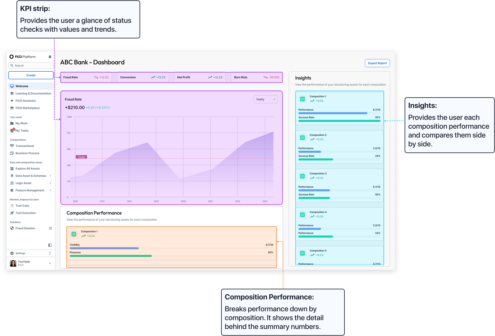
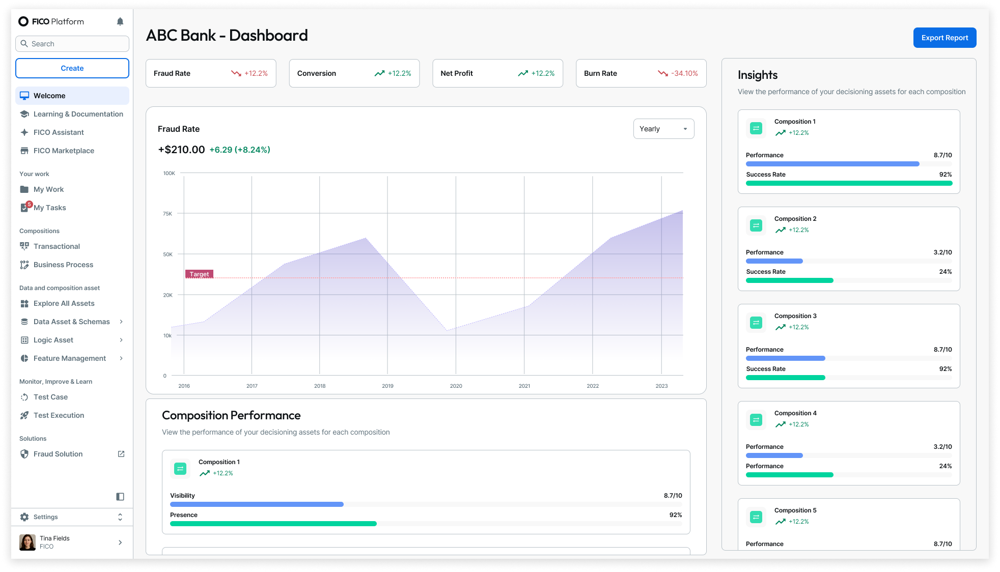
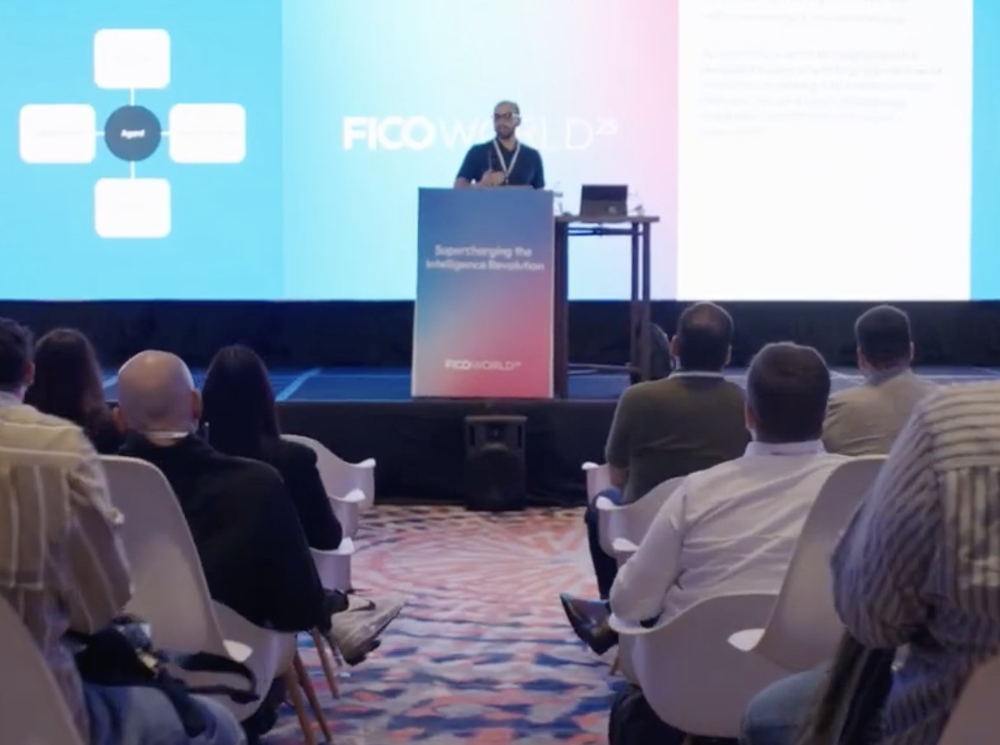
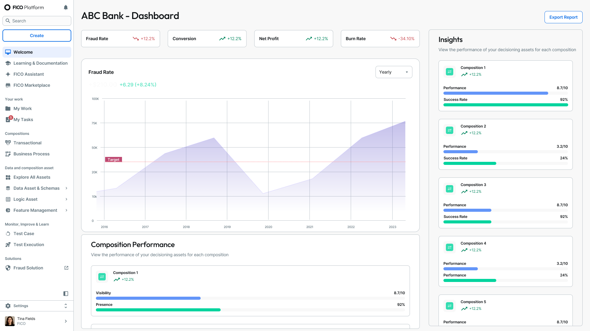
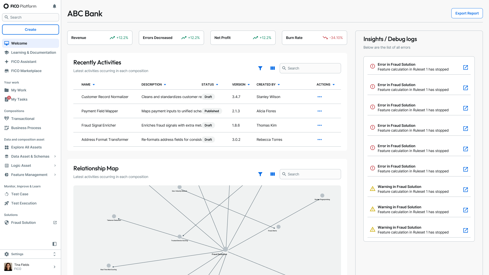
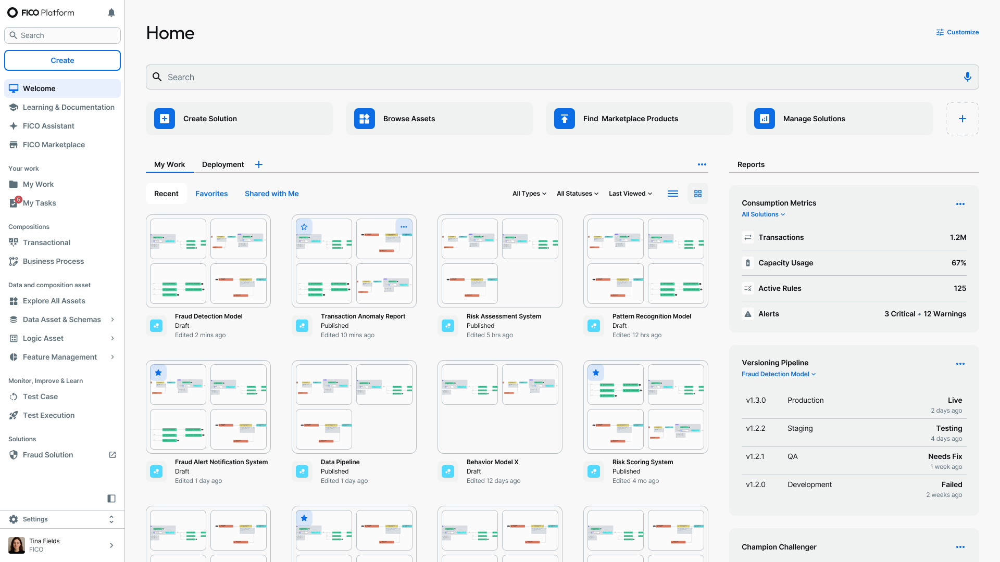

Business Stakeholder
Core Priorities: Hitting P&L and KPI targets by spotting performance changes early and deciding what to escalate or act on, with minimal time in the tool.


I led the design strategy end to end, from the admin provisioning flow to the persona landing pages. I worked with the product managers, architects, and engineering to decide what to ship first for the internal release.
To understand the problems new users face, I partnered with the product manager and spoke with internal sales team members about the issues with the old platform. I also worked with user researchers to evaluate the needs of different users of this type of system. We identified 4 key priorities for the homepages:
One starting point for all users connects every feature and tool, tailored to each person’s role and preferences.
New users need quick orientation through step-by-step guides, pop-up tips, and clear checklists.
Clear action buttons, interactive tools, and easy-to-read dashboards help users see and act on what needs doing.
Users expect secure sign-in and should only see the tools and data meant for their role.
For the MVP, I focused on 4 core persona types and designed a standard default landing page for each: Business Stakeholder, Solution Owner, Technical Expert, and Admin.
While I wasn’t able to attend FICO World 2025 in person, I collaborated with the Product Manager, Architect, and User Researchers, to determine what questions to ask and which features to get more information on.
Workshop Details
Few of the questions asked:

The workshop consisted of 38 participants across 3 personas, generating 389 responses that revealed critical UX gaps and validated feature priorities. These insights shaped the future roadmap, prioritizing high-confidence improvements (hierarchy & personalization).
~ Oct 2025 I was laid off, however I kept designing ~
Post-FICO, I continued using Figma x Claude Code on my own time. I attempted to redesign 3 of the core landing pages (excluding the Admin) with no technical restrictions and focusing on the feedback from FICO World.

Value the Redesign Provides: The redesign now supports decisions, not just status checks. Each savings opportunity shows its dollar value, supporting evidence, and effect on the rest of the business. The user is also able to customize their dashboard to their liking.
Pain Point Relieved: Business Stakeholders can configure to their liking of which and however many metrics they want see without clutter.

Value the Redesign Provides: An interactive map shows how assets connect. The optimization view flags unused and duplicate assets, with links to each one, and alerts and fraud losses prevented sit alongside them.
Pain Point Relieved: Users couldn’t see asset dependencies or duplicates, so they missed savings and couldn’t predict the effects of changes. Now they can see those connections and optimize with confidence.

Value the Redesign Provides: For the redesign, I kept most of the original structure, since it follows a familiar workplace dashboard layout. I removed the Reports section to cut down on clutter, and combined the search bar with the AI assistant. This way, users can start any task, whether searching for something or creating a new model or asset, from one place.
Pain Point Relieved: Removed unnecessary clutter so Technical Experts can focus on getting into their work.
Working on a large enterprise dashboard project taught me that the most useful feedback often comes from the least convenient sources. Getting real users in front of designs is difficult because of security constraints, so when a session is possible, I plan it carefully.
If I did this again, I would push harder to involve users earlier while designs are still rough, so problems surface before the design is locked in.